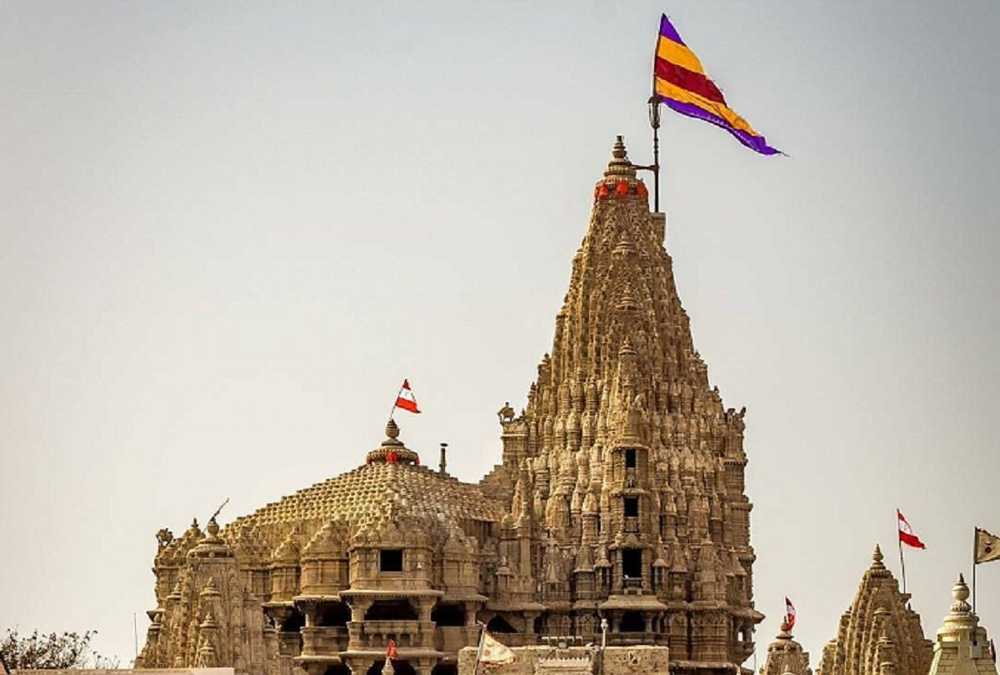

The Dwarkadhish Temple
The main draw for tourists coming to Dwarka, the Dwarkadhish Temple (Jagat Mandir), is believed to have been
established more than 2500 years ago by Lord Krishna’s great grandson, Vajranabh. The ancient temple has been
renovated several times, especially leaving imprints of 16th and 19th centuries. The temple stands on a small
hill accessed by 50 plus steps, with heavily sculptured walls that cocoon the sanctum with the main Krishna idol.
Around the complex lie other smaller shrines. The walls have intricately carved mythical characters and legends.
The impressive 43 m high spire is topped with a flag made from 52 yards of cloth that flutters in the soft breeze
from the Arabian Sea behind the temple. There are two doors (swarg and moksh) for the entry and exit of the temple.
bridge called Sudama Setu (7am–1pm, 4–7.30pm) at the base of the temple takes one across the Gomti creek towards the beach.
